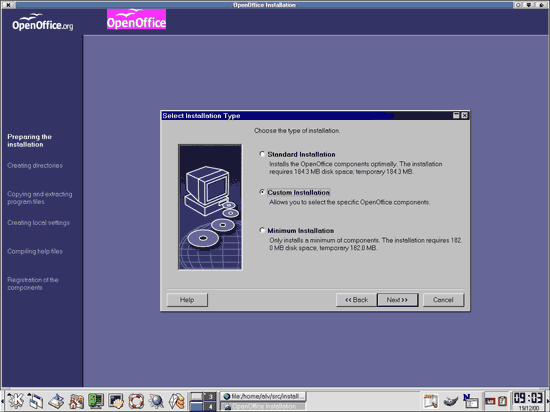
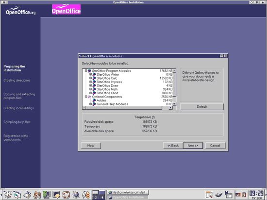
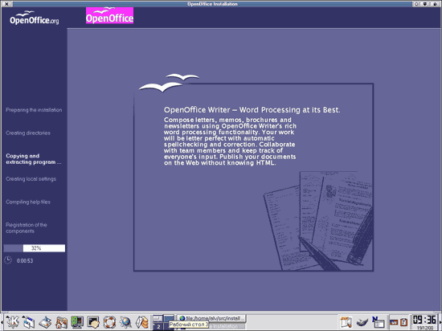
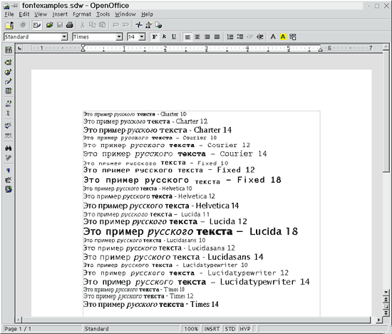

Первые плоды открытости
Алексей Федорчук
[email protected],
http://linuxsaga.newmail.ru/
Офисный комплект StarOffice продолжает свою эволюцию:
из чисто коммерческого пакета он превратился сначала в
бесплатный для некоммерческого использования, а ныне
обзавелся даже сайтом (http://www.openoffice.org), где
открыто выложены исходные тексты разрабатываемой
бета-версии. В соответствии с этим он даже сменил имя:
начиная с тестируемой сейчас 6-й версии, пакет будет
именоваться OpenOffice.
И результаты новой политики фирмы Sun (http://www.sun.com/) не
замедлили сказаться. Причем, если судить по бета-версиям
603 и 609, они привели к положительным сдвигам по ряду
направлений.
На вышеупомянутом сайте кроме исходных текстов
свободно доступна также откомпилированная 6-я
бета-версия, причем получить ее можно без всякой
докучливой регистрации. Исходники предлагаются в виде
архива tar.gz объемом чуть больше 50 Мбайт. В него
входит множество дистрибутивных файлов и скрипт для их
инсталляции (setup).
Первое, что бросается в глаза при инсталляции, -
смена логотипа: место пестрой бабочки заняла пара белых
чаек (рис. 1). Остальное практически без изменений: за
некоей дополнительной информацией, лицензионным
соглашением и предложением ввести данные пользователя
(они отнюдь не обязательны) следует выбор типа
установки, которая, как и прежде, может быть
стандартной, выборочной и минимальной.
 |
Рис. 1. OpenOffice: начало
установки.
|
Наибольший интерес представляет, естественно,
выборочная установка (custom). При переходе к ней
сначала предлагается выбрать каталог (по умолчанию -
$HOME/openoffice60), а затем - компоненты для установки.
Компоненты подразделяются на основные программные модули
и дополнительные компоненты (рис. 2). В числе первых:
- текстовый процессор StarOffice Writer (вместо
прежнего StarWriter);
- табличный процессор StarOffice Calc;
- презентационная программа StarOffice Impress;
- векторный графический редактор StarOffice Draw;
- редактор математических выражений StarOffice Math;
- средство для построения графиков StarOffice Chart.
В рассматриваемых мной бета-версиях отсутствуют
модуль базы данных, личный органайзер и планировщик
коллективной работы, которые имеются в полной
(поставляемой на CD-ROM) версии 5.2.
 |
Рис. 2. Установка OpenOffice:
выбор пакетов.
|
Дополнительные компоненты включают:
- Add-ins (некие дополнения, смысл которых не очень
ясен);
- общую систему справки (General Help Modile);
- галерею рисунков, звуковых файлов и прочих
дополнений подобного рода (Optional Gallery Themes);
- среду Java (Java Environment Installation).
После выбора компонентов и сообщения об отсутствии
среды Java (в состав бета-версии она не входит)
начинается собственно установка (рис. 3), которая
происходит фантастически быстро, чуть больше двух минут,
и заканчивается сообщением об успешном ее завершении. В
рассматриваемых версиях не предусмотрена интеграция с
KDE, и соответствующего вопроса при установке не
возникает.
 |
Рис. 3. Ход установки
OpenOffice.
|
Программа запускается командой
~/openoffice60/soffice. Никакого интегрированного
рабочего стола в текущих версиях нет: по умолчанию
загружается текстовый процессор StarOffice Writer
(интересно, почему названия и программ, и их модулей со
временем становятся все длиннее?). Операции по открытию
и созданию документов (текстовых, HTML-документов,
электронных таблиц, рисунков и т.д.), в предыдущей
версии возложенные на рабочий стол, доступны через пункт
File главного меню.
Хочется верить, что отсутствие рабочего стола - это
особенность бета-версии (достаточно ранней). Ведь именно
этот компонент придавал всегда своеобразие пакету
StarOffice, обеспечивая, во-первых, интеграцию (не
превзойденную во всех иных офисных комплектах для любой
платформы), а во-вторых, выступая как полноценная замена
развитому оконному менеджеру или интегрированной
графической среде типа KDE.
Пока еще рано детально обсуждать особенности новой
версии, тем более что на первый взгляд принципиальных
изменений по сравнению с версией 5.2 незаметно. В
принципе функциональность StarOffice уже в версии 5.2,
на мой взгляд, более чем избыточна для
среднестатистического пользователя офисного комплекта.
Остановлюсь только на двух аспектах, представляющих
максимальный интерес в условиях постсоветской
действительности и вызывавших наибольшие проблемы во
всех предыдущих версиях StarOffice. А именно: есть ли
какой-либо прогресс в плане поддержки кириллицы - раз и
в плане взаимодействия с Microsoft Office - два.
И тут я был приятно удивлен - прогресс налицо.
Правда, в текущей бета-версии не предусмотрена в явном
виде поддержка какого-либо иного языка, кроме
американского английского, следовательно, проверки
русской орфографии и расстановки переносов ожидать не
приходится. Однако в целом работа с кириллическими
текстами вполне возможна и, более того, достаточно
комфортна. Во-первых, имеется 8 (восемь! - какой еще
локализованный офисный пакет может похвастаться таким
количеством) кириллических гарнитур: Chapter, Courier,
Fixed, Helvetica, Lucida, Lucidasans, Lucidatypewriter,
Times (рис. 4). Доступны они сразу же после установки,
без всяких ухищрений -- таких, как подстановка шрифтов
(Font Replacement в данной версии) и т.п.
Правда, детальное изучение каталога
~/openoffice60/share/fonts/type1, содержащего
PostScript-шрифты для OpenOffice, показало, что реально
все они, кроме гарнитур семейства Lucida, в поставке
отсутствуют. Это заставляет предположить, что пакет
наконец-то научился работать с системными шрифтами X
Windows. Ранее, чтобы использовать системные шрифты в
StarOffice, требовалось скопировать их (вместе с
метриками) в соответствующие каталоги пакета.
 |
Рис. 4. Кириллические шрифты в
текстовом редакторе StarOffice Writer из пакета
OpenOffice.
|
Во-вторых, ни одна из доступных OpenOffice экранных
гарнитур ни в одном из компонентов OpenOffice не
обнаруживала и намека на тот чудовищный кернинг, который
преследовал меня с первого дня знакомства со StarOffice
(причем как для его собственных шрифтов, так и для
скопированных из системы). В любых кеглях и начертаниях
шрифты выглядели абсолютно нормально. Правда, при
сильном увеличении (или большом кегле) вид их был
несколько грубее, чем шрифтов True Type в
Windows-приложениях. И вывести их на печать не
представлялось возможным по нескольким причинам, одна из
которых - отсутствие системы печати как таковой (в
OpenOffice, как и в StarOffice, она автономна от печати
собственно Linux). Очевидно, в финальной версии
OpenOffice система печати все же появится.
В-третьих, наконец существенно усовершенствовались
средства экспорта/импорта кириллических текстов, хотя
без недоработок здесь не обошлось. Так, из StarOffice
Writer корректно считывались документы, созданные в
Microsoft Word 97/2000. И напротив, тексты, набранные в
StarOffice Writer (в кодировке КОИ8) и сохраненные как
файлы Microsoft Word 97/2000, корректно воспроизводились
последним. В предыдущей версии без специальных приемов
добиться этого не удавалось: несмотря на преобразование
документа в собственный формат, Microsoft Word 97/2000
сохранял исходную кодировку КОИ8.
Хуже дело обстояло с форматами Microsoft Word 6.0/95
и RTF: экспорт и в тот, и в другой формат приводил к
замене символов кириллицы вопросительными знаками. При
открытии таких файлов в Windows текст превращался в
абракадабру.
Я не очень задумывался над причинами этого явления,
пока не получил отклик на предварительную версию этой
заметки от Сергея Шарашкина, разработчика прекрасного
комплекта кириллических шрифтов Type 1. Он натолкнул
меня на размышления по этому поводу, приведшие к
следующим выводам.
Проблема, видимо в том, что хотя Windows в любом из
своих вариантов и оперирует русскими текстами в
кодировке CP1251, но ведь Microsoft Office, начиная с
версии 97, использует шрифты Unicode, которые (если они
"правильные") в явном виде содержат информацию обо всех
кодировках русского языка. Поэтому нет ничего странного,
что при импорте файлов в формате Microsoft Word 97 в
OpenOffice (равно как и при обратной процедуре) эта
информация используется для корректной замены
кириллических символов. А документы Microsoft Word
6.0/95, естественно, оформляются шрифтами, имеющими (для
кириллицы, разумеется) только символы кодовой таблицы
CP1251, и их преобразование в символы КОИ8 требует
дополнительных манипуляций, не реализованных в текущей
версии OpenOffice. То же касается и формата RTF, по
крайней мере до недавнего времени не поддерживавшего
Unicode.
Это, конечно, недостаток, но, на мой взгляд, не
слишком существенный (переход на новые версии продукции
Microsoft в России, по известным причинам, идет
существенно быстрее, чем в любой другой стране мира).
Хуже другое: с экспортом в формат HTML дело обстоит из
рук вон плохо. Подобно предпоследним (4.х-5.1) версиям
StarOffice, в текущей реализации OpenOffice русские
буквы в Web-документах замещаются так называемыми
Esc-последовательностями, то есть набором символов вида
&###;. Такой файл не только не может редактироваться
в исходных кодах, но даже не воспроизводится браузером:
попытка открыть его в Netscape Navigator (как для Linux,
так и для Windows) и в Lynx вызывала появление тех же
кодовых последовательностей... Будем надеяться, что это
недоработка бета-версии, к тому же нелокализованной.
Зато, как бы в утешение, HTML-код, генерируемый
StarOffice при экспорте в этот формат, стал несколько
чище: явно лишние теги хотя и имели место быть, но
локализовались исключительно в начале абзацев (в прошлых
версиях они нередко вклинивались не только в середину
фразы, но и внутрь слова). А количество автоматически
сгенерированных метатегов укладывалось в рамки приличий:
определение DOCTYPE (почему-то HTML версии 3.2),
указание на charset и, конечно, именование GENERATOR'а
(почему-то StarOffice 5.2).
Порадовал корректный экспорт в текстовые форматы.
Однако попытки сохранить русскоязычный документ как
"просто текст", "текст MS-DOS" и т.д. желаемого
результата не дают. Необходимо выбрать в меню File -
Save as - Encoding text; тогда после указания имени
сохраняемого файла и пути к нему появится панель с
предложением уточнить кодировку. По умолчанию будет
отмечена системная кодировка (System), выбор ее приведет
к сохранению текста в кодировке КОИ8-Р. Можно, однако,
выбрать также кодовые страницы 865, 866, 1251, ISO
8859-5 и Mac OS. Во всех случаях, кроме последнего
(проверить который я не смог), русские буквы
воспроизводятся правильно.
Правда, корректно данная версия OpenOffice считывает
только текстовые файлы в кодировке КОИ8. При открытии
текста в кодировке CP1251 и прочих автоматического
перекодирования (подобно тому, как это имеет место с
документами Microsoft Word) не происходит.
Итак, в текущей бета-версии ликвидированы два из трех
коренных недостатков StarOffice, препятствовавших его
широкому распространению: безобразия с кириллическими
шрифтами Type 1 и невозможность без дополнительных
ухищрений обмениваться файлами с приложениями Windows.
Остается надеяться, что и третий недостаток - хранение
русскоязычных словарей в кодировке ISO 8859-5, что
крайне затрудняло использование в русских текстах
проверки орфографии и расстановки переносов, - будет
оперативно ликвидирован.
Конечно, в нынешнем виде OpenOffice 6.0 нельзя
рассматривать в качестве рабочего инструмента - для
этого он недостаточно устойчив, да и быстродействие
оставляет желать лучшего. Однако темпы его обновления
внушают надежду, что появление если не окончательного
релиза, то хотя бы работоспособной бета-версии не за
горами. Не сказалось ли и в этом благодатное воздействие
открытых исходных текстов?
Не хотелось бы только, чтобы фирма Sun повторила
ошибку, которую она допустила с бета-версией StarOffice
5.2, англоязычный вариант которой был доступен для
опробования широкими массами трудящихся, а русский же
готовился в глубоком подполье...